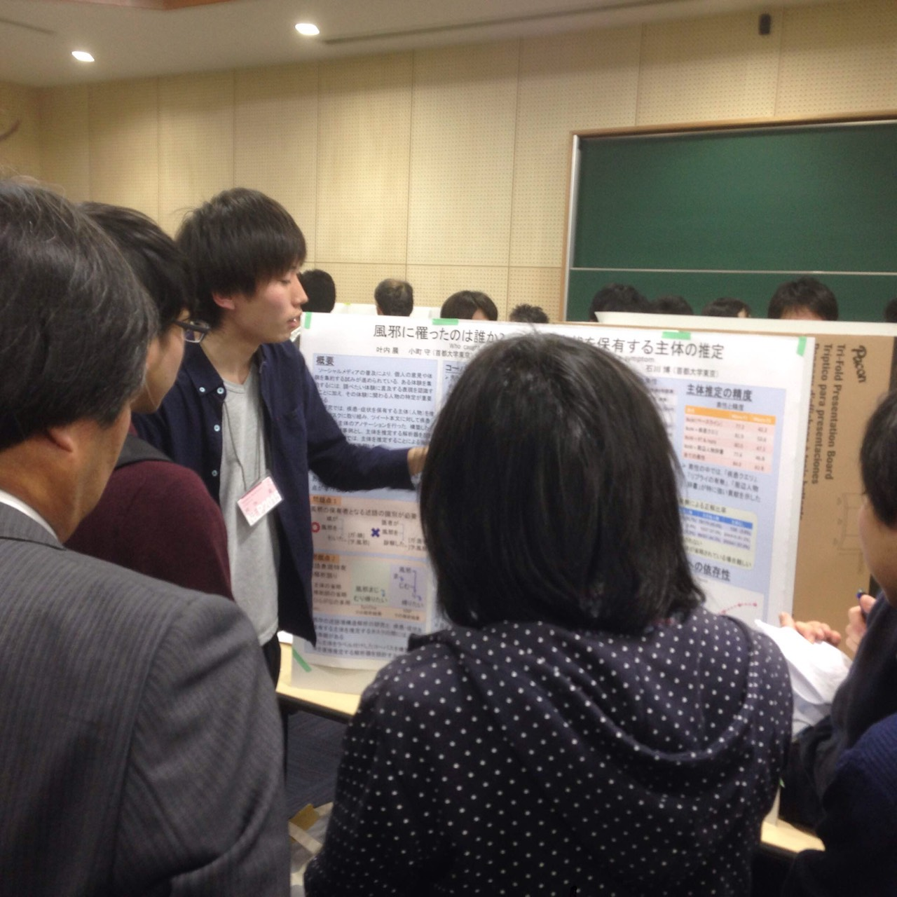
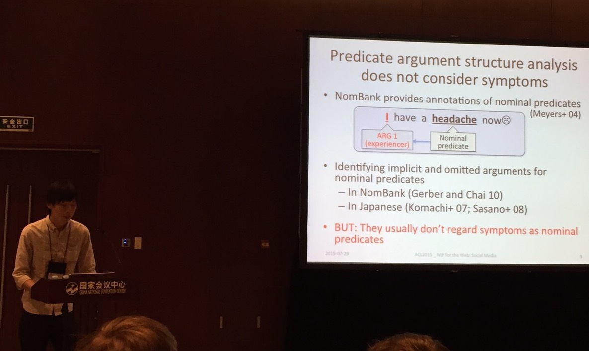

Shin Kanouchi
[ Japanese | English ]
Profile
- Name: Shin Kanouchi
- College Degree: Master Course
Komachi Lab (NLP) / Graduate School of System Design / Tokyo Metropolian University
- Address: 6-6 Asahigaoka, Hino, Tokyo 191-0065, Japan
- Tel: 042-585-8600
- Educational Background:
- 2008.04 - 2011.03: Kunitachi High School, Tokyo.
- 2011.04 - 2015.03: Department of System Design, Tokyo Metropolitan University
- 2015.04 -: Graduate School of System Design, Tokyo Metropolitan University
- Programming Skills: Python(2.7), Java, C, Objective-C
- Platform: Mac OS X
Researches
- Natural Language Processing
- Machine Learning
- Deep Learning
- Machine Translation
- Discourse / Dialog Processing
Affiliations and Seminars Attended
-
2014.08.18 - 2014.8.29: Internship at JXpress Corporation
-
2014.09.02 -: Joined Project Next NLP Workshop
-
2014.09.21 - 2014.09.23: Attended NLP YANS #９
- 2014.10.11: Delivered a lightning talk at DSIRNLP 06
-
2015.03.16 - 2015.03.21: Presented a paper at NLP 2015
- "Who caught a cold? - Identifying the subject of a symptom."

- 2015.04.29: Delivered a lightning talk at DSIRNLP 07
-
2015.07.25 - 2015.07.31: Presented a paper at ACL 2015
- "Who caught a cold? - Identifying the subject of a symptom"

-
2015.08.03 - 2015.08.28: Internship at NTT CS lab.
-
2014.09.21 - 2014.09.23: Attended NLP YANS #10
- Delivered a speech at ACL conference 2015

Teaching Assistant
Research Assistant
-
2015.04 - 2015.09: Komachi Lab. Tokyo Metropolitan University
Paper
-
Journal
-
Shin Kanouchi, Yoshiaki Kitagawa, Eiji Aramaki, Naoaki Okazaki, Mamoru Komachi.
Web Infection Detection from the Web with Subject Identification and Factuality Analysis.
Journal of Natural Language Processing 2015
Link